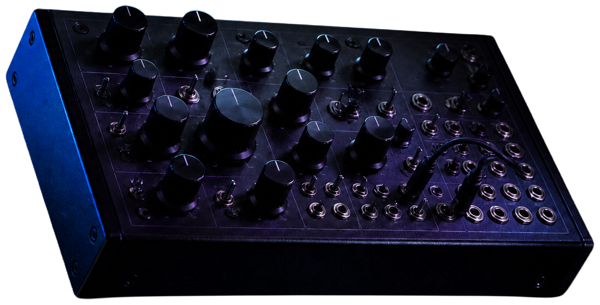
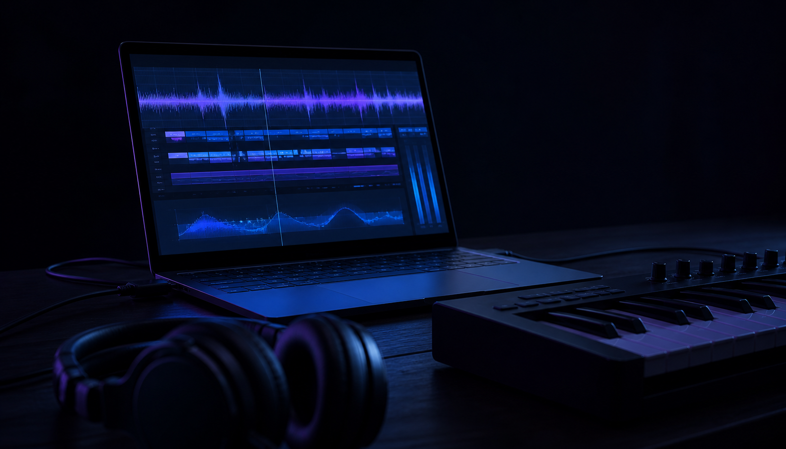

Lyrx is a full studio that opens in one tab. Program drums, draw melodies, twist a synth, mix with real effects — then describe a beat in plain words and let the AI producer lay it down. Nothing to install, nothing to learn first.
Scroll

{{ discoLabel }}
Built to move
Start with one square.
Tap out a rhythm, draw the notes, then let the playhead carry it forward. Every part of Lyrx stays visible, immediate, and yours to change.
{{ st.num }}
{{ st.label }}

The whole room, one tab
Stay in the feeling.
No installs, plugin scans, or setup detours. Open the studio and shape drums, melody, synthesis, effects, vocals, and the final mix without leaving the browser.
Forty seconds inside Lyrx
Watch a track take shape.
Real pointer moves, real studio controls, and a soundtrack rendered by Lyrx itself. Press play with sound on.
41 seconds · 1080p · 60 fpsAudio generated and exported in Lyrx
{{ ft.kicker }}
{{ ft.title }}
{{ ft.body }}
Tactile by design
Fast enough for instinct.
Build a beat directly, or describe the shape you hear and let the AI producer draft it into the same editable grid. Nothing is flattened into a black box.
Digital speed. That late-night record-room feeling.
The floor is waiting.
Your first loop takes about ninety seconds. Everything saves in this browser automatically.